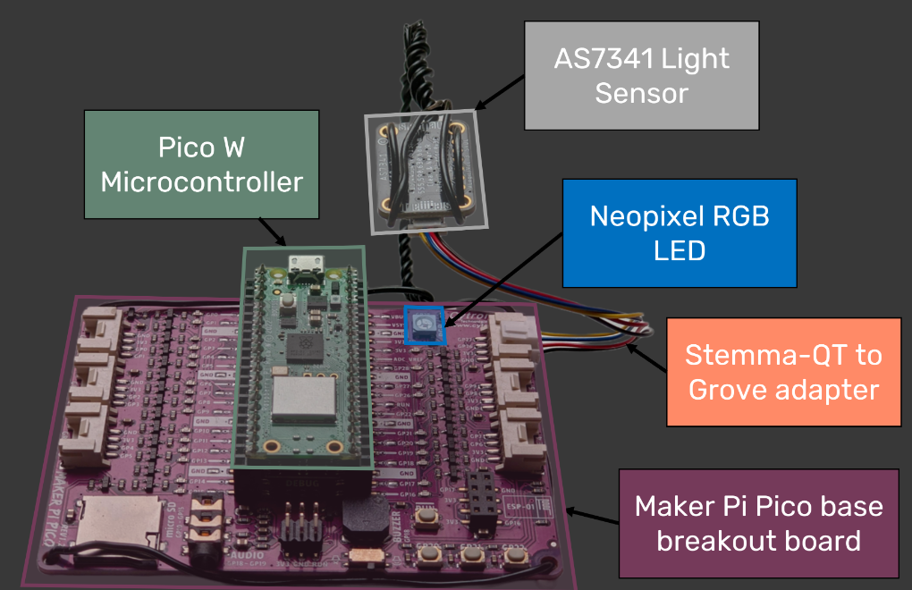

Controlling a remote instrument from an ELN - the SDL-light

- Baird, S. G., & Sparks, T. D. (2022). What is a minimal working example for a self-driving laboratory? Matter, 5(12), 4170–4178. http://dx.doi.org/10.1016/j.matt.2022.11.007
- Baird, S. G., & Sparks, T. D. (2023). Building a "hello world" for self-driving labs: the closed-loop spectroscopy lab light-mixing demo. STAR Protocols, 4(2), 102329. http://dx.doi.org/10.1016/j.xpro.2023.102329
Check out their YouTube video here on making the instrument. They have a GitHUB repo at https://github.com/sparks-baird/self-driving-lab-demo, and an example Colab notebook for running the instrument. The notebook shows how to control the instrument (which is located in Salt Lake City).
Here we look at the barest code required to run a remote "experiment" in our ELN. The gist of this experiment is we have three "knobs" to set, the R, G and B settings of the RGB LED, and we get 8 measurements back, one for each channel of the light sensor. We are going to do a set of experiments that will allow us to choose an RGB setting that results in the ch470 measurement having a value of 10000.
First, we look at the simplest bit of code required to run a single experiment. Note you need to have installed the self_driving_lab_demo package as described here. This package provides a more sophisticated interface to the SDL, but I want a simple code here.
from self_driving_lab_demo import (get_paho_client, mqtt_observe_sensor_data)
PICO_ID = 'test'
client = get_paho_client(f"sdl-demo/picow/{PICO_ID}/as7341/")
R, G, B = (0, 0, 100)
results = mqtt_observe_sensor_data(R, G, B, pico_id=PICO_ID, client=client)
print(results)
from pycse.hashcache import HashCache
@HashCache
def get_results(R, G, B, label=None):
return mqtt_observe_sensor_data(R, G, B, pico_id=PICO_ID, client=client)
get_results(0, 0, 100, label=1)['ch470']
import matplotlib.pyplot as plt
from tqdm import tqdm
B = [0, 25, 50, 75, 100]
results = []
for b in tqdm(B):
results += [get_results(0, 0, b)]
ch470 = [result['ch470'] for result in results]
print(ch470)
plt.plot(B, ch470, 'bo-')
plt.xlabel('B')
plt.ylabel('ch470');
from scipy.interpolate import interp1d I = interp1d(ch470, B) I(10000)
for i in tqdm(range(5)):
print(get_results(0, 0, int(I(10000)), label=i)['ch470'])
import numpy as np r52 = [get_results(0, 0, int(I(10000)), label=i)['ch470'] for i in range(5)] print(np.mean(r52), np.std(r52))
for i in tqdm(range(5)):
print(get_results(0, 0, 53, label=i)['ch470'])
r53 = [get_results(0, 0, 53, label=i)['ch470'] for i in range(5)] print(np.mean(r53), np.std(r53))
get_results(0, 0, 52.2)